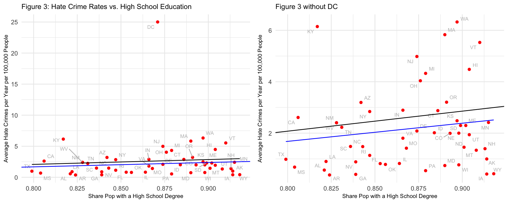

I did this project with a friend in our Introduction to Data Science class. I was able to match the topic and data to I was doing at the same time in my GIS class, but this time I did all the analysis in R. The other project is available on my Writing Samples Page.
Click each arrow to expand/collapse code.
#load the datasets
hate_crimes_538 <- read.csv("hate_crimes.csv") #538 hate crimes dataset
hate_crimes_recent <- read.csv("hate_crimes_recent.csv") #pre-curated FBI data from 2016-2018
state_abbreviations <- read.csv("state_abbreviation.csv") #list of state abbreviations
state_coordinates <- read.csv("state_coordinates.csv") # list of approximate longitude/latitude coordinates of each state
testtab <- read.delim("testtab.txt") # US Policies and Politics dataset (Michigan State University - for Question 1)
#clean testtab to make the dataset smaller
clean_partymeasure <-
testtab %>%
select(year, state, pid, fpvi, ideo, liberal, conservative, republican, democrat) %>%
filter(year==2010)
#get rid of Alaska and Hawaii so mapping just shows continental US and fits better on the screen
state_coordinates <-
state_coordinates %>%
filter(state != "Alaska" & state != "Hawaii")
#run joins to get the dataset we want
#join FBI data and 538 data
hate_crimes <-
hate_crimes_538 %>%
left_join(hate_crimes_recent, by=c("state" = "STATE"))
#add in state abbreviations
hate_crimes <-
hate_crimes %>%
left_join(state_abbreviations, by="state")
#add in state coordinates
hate_crimes <-
hate_crimes %>%
left_join(state_coordinates, by="state")
#rename the longitude column because it was accidentally named wrong
names(hate_crimes)[33] <- "Longitude"
#add in political party data
hate_crimes <-
hate_crimes %>%
left_join(clean_partymeasure, by="state")
#make an edition of the dataset without the outlier of DC
hate_crimes_no_dc <-
hate_crimes %>%
filter(state != "District of Columbia")
For this project, we investigated three questions, which are as follows.
This first question focuses on party affiliation as an explanation for the prevalence of hate crimes. We feel that it is especially important in current times, as political views are extremely polarizing. Right after Trumps election, there was a huge spike in experience of hate crimes. This indicates that political party may influence hate crime rates, so we looked to see if Republican states have higher rates of hate crimes. We hypothesize that Republican states experience more hate crimes than Democratic states because extreme Republicans are more often associated with less open and tolerant view points, so it seems that they would be more likely to commit hate crimes. This prediction is based on our own bias as liberal Democrats, so if our hypothesis is refuted, it may make us reconsider our own prejudices against conservative states.
This second question seeks to reconfirm the conclusions of the FiveThirtyEight article that the majority of this data was associated with, which found that income inequality and hate crime rates were positively correlated. Our analysis utilized more recent data on hate crime rates than what was available at the time, 2016 to 2018 as opposed to 2010 to 2015, but we anticipated that this trend would continue nonetheless. This question is especially relevant right now given how much light has been shed on inequality by the coronavirus.
More specifically, is the share of a states population with a high school degree associated with a decreased level of hate crimes reported to the FBI annually from 2016 to 2018?
The third question investigates the relationship between high school education rates and hate crime rates. Literature and background research show that hate crimes are often founded in ignorance or fear of a group that the victim belongs to, so we hypothesized that better educated (and thus, more informed) people would be more tolerant and less likely to commit such crimes. Additionally, there is evidence that there is a negative correlation between crime rates and education, so it is likely that the same relationship will apply to this subset of crime. As many questions are being asked about our education system right now, it would be useful to know what its impacts are on society in general.
The foundational data in this study were compiled by FiveThirtyEight from various sources including The Kaiser Family Foundation, the US Census Bureau, the Southern Poverty Law Center, the FBI Uniform Crime Reporting (UCR) project, and the United States Election Project. The Kaiser Family Foundation data was primarily based on data collected by the US Census over a variety of years (the year of demographic data ranges from 2009 to 2015). The FBI data represents the average annual hate crimes per 100,000 people from 2010 to 2015. These data only include prosecutable hate crimes and local agencies voluntarily report their data to the FBI. The compiled data includes 11 variables for each US state, though we only used two of them. The variables we utilized from this dataset are the share of adults 25 and older with a high-school degree (2009), and the Gini index, a measurement of unequal wealth distribution and income inequality (2015). The Gini index ranges from 0 to 1, with 1 representing higher income inequality.
Additionally, we collected more recent data regarding hate crimes from the FBIs UCR website. Data from 2016 to 2018 (the most recent year available) was collected and averaged over the years per 100,000 people, similarly to the original collection by FiveThirtyEight.
An additional dataset that we used to help answer our first research question came from data compiled by Michigan State University, from their Correlates of State Policy Project. It compiles 2,091 variables into one dataset to help with US Policy research and state policies and politics. Within this dataset contain specific sections, and we utilized variables within the Public Opinion, Partisanship, and Political Knowledge section. We cut out all but year, state, and pid a measure of state political party leanings by taking the proportion of Democrats and subtracting the proportion of Republicans within every state. Therefore, the higher the number (or the more positive), the more Democratic a state leans, and the lower (or more negative) the number, the more Republican a state leans. 2010 was the most recently available year for data using the pid variable.
For map-based visualizations, latitude and longitude data for each state was obtained from the internet and joined with the existing dataset in order to create the proportional symbol maps.
#map political party identification and hate crime rates.
states_map <- map_data("state")
hate_crimes %>%
ggplot(aes(fill = pid)) +
geom_map(aes(map_id = lower_state), color="gray", size= .3, map = states_map) +
expand_limits(x = states_map$long, y = states_map$lat) + #This assures the map looks decently nice.
theme_map() +
scale_fill_gradient2(low="red", mid="white", high = "blue", midpoint=0)+
geom_point(aes(x=Longitude, y=Latitude, size=Avg_Crimes_per_100k, alpha = 0.5))
This graphic utilizes a choropleth and a proportional symbol map. The colors of the states that make up the United States (excluding Alaska and Hawaii) indicate the political party leanings of each state, and the size of the bubble within each state indicates the average rate of hate crimes. Based on this map, it appears that the largest bubbles tend to occur in blue/Democratic-leaning states. Therefore, it seems that states that tend to lean Republican generally experience fewer hate crimes than states with Democratic leanings the opposite of our hypothesis. For a more statistical analysis, we analyze the same data on the graphs below.
#model the relationship between hate crime rates and pid (with and without DC)
modelpid <- lm(Avg_Crimes_per_100k ~ pid, data=hate_crimes)
modelpid
Call:
lm(formula = Avg_Crimes_per_100k ~ pid, data = hate_crimes)
Coefficients:
(Intercept) pid
2.199 16.223 summary(modelpid)
Call:
lm(formula = Avg_Crimes_per_100k ~ pid, data = hate_crimes)
Residuals:
Min 1Q Median 3Q Max
-5.0028 -1.2404 -0.6098 1.0984 15.2359
Coefficients:
Estimate Std. Error t value Pr(>|t|)
(Intercept) 2.1988 0.4136 5.317 2.59e-06 ***
pid 16.2225 3.1415 5.164 4.40e-06 ***
---
Signif. codes: 0 '***' 0.001 '**' 0.01 '*' 0.05 '.' 0.1 ' ' 1
Residual standard error: 2.897 on 49 degrees of freedom
Multiple R-squared: 0.3524, Adjusted R-squared: 0.3392
F-statistic: 26.67 on 1 and 49 DF, p-value: 4.398e-06modelpid_no_dc <- lm(Avg_Crimes_per_100k ~ pid, data=hate_crimes_no_dc)
modelpid_no_dc
Call:
lm(formula = Avg_Crimes_per_100k ~ pid, data = hate_crimes_no_dc)
Coefficients:
(Intercept) pid
2.072 5.710 summary(modelpid_no_dc)
Call:
lm(formula = Avg_Crimes_per_100k ~ pid, data = hate_crimes_no_dc)
Residuals:
Min 1Q Median 3Q Max
-2.5791 -0.8935 -0.1917 0.9260 3.8072
Coefficients:
Estimate Std. Error t value Pr(>|t|)
(Intercept) 2.0716 0.2087 9.926 3.23e-13 ***
pid 5.7096 1.8083 3.157 0.00275 **
---
Signif. codes: 0 '***' 0.001 '**' 0.01 '*' 0.05 '.' 0.1 ' ' 1
Residual standard error: 1.46 on 48 degrees of freedom
Multiple R-squared: 0.172, Adjusted R-squared: 0.1547
F-statistic: 9.969 on 1 and 48 DF, p-value: 0.002751#graph hate crime rates v pid
graphpid <- hate_crimes %>%
ggplot(aes(x=pid, y=Avg_Crimes_per_100k, color=PARTY))+
geom_point() +
scale_color_manual(values=c("blue","red"))+
geom_text_repel(size=2.5, aes(label= state_abbr.x), col="grey")+
ggtitle("Figure 1: Hate Crime Rates vs. State Party Identification")+
theme_minimal()+
theme(axis.title.x = element_text(size = 8),
axis.title.y = element_text(size = 8),
plot.title = element_text(size = 10)) +
geom_smooth(method="lm", se=FALSE, color = "black", size = .4)+
geom_abline(intercept=2.072, slope = 5.710, color = "gray69", size = 0.4)+
labs(x="State Party Identification (Positive = More Democrat)", y="Average Hate Crimes per Year per 100,000 People")
#graph hate crime rates v pid without DC
graphpidnoDC <- hate_crimes_no_dc %>%
ggplot(aes(x=pid, y=Avg_Crimes_per_100k, color=PARTY))+
geom_point() +
scale_color_manual(values=c("blue","red"))+
geom_text_repel(size=2.5, aes(label= state_abbr.x), col="grey")+
ggtitle("Figure 1 without DC")+
theme_minimal()+
theme(axis.title.x = element_text(size = 8),
axis.title.y = element_text(size = 8),
plot.title = element_text(size = 10)) +
geom_smooth(method="lm", se=FALSE, color = "gray69", size = .5)+
geom_abline(intercept = 2.199, slope = 16.223, size = 0.5)+
labs(x="State Party Identification (Positive = More Democrat)", y="Average Hate Crimes per Year per 100,000 People")
#put the two graphs next to each other
plot_grid(graphpid, graphpidnoDC, rel_widths = c(1,1), align = "hv")
These graphs utilize a variable called pid, which is an indicator of state political party affiliation. It takes the proportion of Democrats and subtracts the proportion of Republicans within every state. Therefore, the higher the number (or the more positive), the more Democratic a state leans, and the lower (or more negative) the number, the more Republican a state leans. For clearer visualization, states that have a pid greater than 0 are colored blue (to indicate more Democratic) and states that have a pid less than 0 are colored red (to indicate more Republican).
Both graphs show a strong positive linear relationship between Democratic-leaning states and the number of hate crimes per 100,000 people the state experiences. Thus, it seems that Democratic-leaning states experience more hate crimes, contrary to our hypothesis that Republican-leaning states experience more hate crimes. It may be that more Republican-leaning states contain more homogeneous populations, which may reduce the likelihood of a hate crime occurring. It is also possible that Republican-leaning states have lower populations, which also could reduce the likelihood of a hate crime occurring. In order to better visualize and read the data regarding each individual state, the graph at left includes all 50 states and DC and the graph at right removes this graph removes the outlier of DC, which skewed the data. The District of Columbia experiences many more hate crimes than the states, which made the data difficult to interpret. The black line on each graph indicates the line of best fit when including DC and the gray line indicates the line of best fit without DC. The p-values for both of these models are below 0.05, indicating that there is significant and robust relationship between state party affiliation and hate crimes rates.
#map hate crime rates and gini index
states_map <- map_data("state")
hate_crimes %>%
ggplot(aes(fill = gini_index)) +
geom_map(aes(map_id = lower_state), color="gray50", size= .3, map = states_map) +
expand_limits(x = states_map$long, y = states_map$lat) + #This assures the map looks decently nice.
theme_map() +
scale_fill_gradient(low="white", high = "firebrick3")+
geom_point(aes(x=Longitude, y=Latitude, size=Avg_Crimes_per_100k, alpha = 0.5))
A geospatial analysis does not immediately indicate a relationship between income inequality (indicated by the choropleth) and hate crime rates (indicated by the bubbles). For example, a look at the Four Corners states indicates approximately the same rates of hate crimes but widely varying income inequality rates. Graphs to support a statistical analysis are below.
#model hate crime rates v. gini index with and without DC
modelincome <- lm(Avg_Crimes_per_100k ~ gini_index, data=hate_crimes)
modelincome
Call:
lm(formula = Avg_Crimes_per_100k ~ gini_index, data = hate_crimes)
Coefficients:
(Intercept) gini_index
-36.68 86.59 summary(modelincome)
Call:
lm(formula = Avg_Crimes_per_100k ~ gini_index, data = hate_crimes)
Residuals:
Min 1Q Median 3Q Max
-3.6923 -1.9391 0.2089 1.2331 15.6150
Coefficients:
Estimate Std. Error t value Pr(>|t|)
(Intercept) -36.676 9.536 -3.846 0.000347 ***
gini_index 86.591 20.994 4.125 0.000143 ***
---
Signif. codes: 0 '***' 0.001 '**' 0.01 '*' 0.05 '.' 0.1 ' ' 1
Residual standard error: 3.101 on 49 degrees of freedom
Multiple R-squared: 0.2577, Adjusted R-squared: 0.2426
F-statistic: 17.01 on 1 and 49 DF, p-value: 0.0001433modelincome_no_dc <- lm(Avg_Crimes_per_100k ~ gini_index, data=hate_crimes_no_dc)
modelincome_no_dc
Call:
lm(formula = Avg_Crimes_per_100k ~ gini_index, data = hate_crimes_no_dc)
Coefficients:
(Intercept) gini_index
-0.8172 6.6016 summary(modelincome_no_dc)
Call:
lm(formula = Avg_Crimes_per_100k ~ gini_index, data = hate_crimes_no_dc)
Residuals:
Min 1Q Median 3Q Max
-1.8762 -1.2863 -0.1254 0.3631 4.2310
Coefficients:
Estimate Std. Error t value Pr(>|t|)
(Intercept) -0.8172 5.8014 -0.141 0.889
gini_index 6.6016 12.8195 0.515 0.609
Residual standard error: 1.6 on 48 degrees of freedom
Multiple R-squared: 0.005494, Adjusted R-squared: -0.01522
F-statistic: 0.2652 on 1 and 48 DF, p-value: 0.6089#graph hate crimes v. gini index
graphincome <- hate_crimes %>%
ggplot(aes(x=gini_index, y=Avg_Crimes_per_100k))+
geom_point(col="red") +
geom_text_repel(size=2.5, aes(label= state_abbr.x), col="grey")+
ggtitle("Figure 2: Hate Crime Rates vs. Income Inequality")+
theme_minimal()+
theme(axis.title.x = element_text(size = 8),
axis.title.y = element_text(size = 8),
plot.title = element_text(size = 10)) +
geom_smooth(method="lm", se=FALSE, color = "black", size = .4)+
geom_abline(intercept=-0.8172, slope = 6.6016, color = "blue", size = 0.4)+
labs(x="Gini Index", y="Average Hate Crimes per Year per 100,000 People")
#graph hate crimes v. gini index without DC
graphincomenoDC <- hate_crimes_no_dc %>%
ggplot(aes(x=gini_index, y=Avg_Crimes_per_100k))+
geom_point(col="red") +
geom_text_repel(size=2.5, aes(label= state_abbr.x), col="grey")+
ggtitle("Figure 2 without DC")+
theme_minimal()+
theme(axis.title.x = element_text(size = 8),
axis.title.y = element_text(size = 8),
plot.title = element_text(size = 10)) +
geom_smooth(method="lm", se=FALSE, color = "blue", size = .5)+
geom_abline(intercept = -36.676, slope = 86.591, size = 0.5)+
labs(x="Gini Index", y="Average Hate Crimes per Year per 100,000 People")
#put the graphs next to each other
plot_grid(graphincome, graphincomenoDC, rel_widths = c(1,1), align = "hv")
The graph at left indicates a positive relationship between hate crime rates and income inequality, as measured by the Gini index. The black line of best fit shown has a slope of 86.59, indicating that for each one point higher the Gini index of a state is, the model predicts 86.59 more hate crimes per 100,000 people. The p-value for this slope is very low, at 0.00143, indicating that, were our data to include the entire population of hate crime statistics, the same trend would be evident. The state with the highest income inequality is Washington, D.C., and it had a hate crime rate nearly four times higher than the next highest state. The same analysis, without this outlier, is conducted at right with the analysis below.
The graph at right also indicates a positive relationship between hate crime rates and income inequality. The blue line of best fit shown has a slope of 6.6016, indicating that for each one point higher the Gini index of a state is, the model predicts 6.6016 more hate crimes per 100,000 people. The original line of best fit is shown for comparison: this relationship is significantly less steep than the one shown in the previous model, but the slope is positive nonetheless. The p-value for this model is 0.609, which is very large and indicates that this relationship would not be repeated were this sample to be expanded.
Because the p-value is not repeatable after removing the outlier of DC, this analysis indicates that there is not a consistent relationship between income inequality and hate crimes. This is counter to the conclusions of the FiveThirtyEight article that was associated with the original dataset, though they analyzed older hate crime data.
#map hate crime and share of population with high school degree
states_map <- map_data("state")
hate_crimes %>%
ggplot(aes(fill = share_pop_HS_degree)) +
geom_map(aes(map_id = lower_state), color="seagreen4", size=0.3, map = states_map) +
expand_limits(x = states_map$long, y = states_map$lat) + #This assures the map looks decently nice.
theme_map() +
scale_fill_gradient(low="white", high = "seagreen3")+
geom_point(aes(x=Longitude, y=Latitude, size=Avg_Crimes_per_100k, alpha = 0.7))
A geospatial analysis does not immediately indicate a relationship between high school degrees and hate crime rates. For example, look again at the Four Corners states, which have approximately the same rates of hate crimes but widely varying high school education rates. Graphs to support a statistical analysis are below.
#model the relationship
modelHS <- lm(Avg_Crimes_per_100k ~ share_pop_HS_degree, data=hate_crimes)
modelHS
Call:
lm(formula = Avg_Crimes_per_100k ~ share_pop_HS_degree, data = hate_crimes)
Coefficients:
(Intercept) share_pop_HS_degree
-4.164 7.801 summary(modelHS)
Call:
lm(formula = Avg_Crimes_per_100k ~ share_pop_HS_degree, data = hate_crimes)
Residuals:
Min 1Q Median 3Q Max
-2.5764 -1.5732 -0.8086 0.3495 22.3748
Coefficients:
Estimate Std. Error t value Pr(>|t|)
(Intercept) -4.164 12.958 -0.321 0.749
share_pop_HS_degree 7.801 14.898 0.524 0.603
Residual standard error: 3.59 on 49 degrees of freedom
Multiple R-squared: 0.005565, Adjusted R-squared: -0.01473
F-statistic: 0.2742 on 1 and 49 DF, p-value: 0.6029modelHS_no_dc <- lm(Avg_Crimes_per_100k ~ share_pop_HS_degree, data=hate_crimes_no_dc)
modelHS_no_dc
Call:
lm(formula = Avg_Crimes_per_100k ~ share_pop_HS_degree, data = hate_crimes_no_dc)
Coefficients:
(Intercept) share_pop_HS_degree
-3.969 7.061 summary(modelHS)
Call:
lm(formula = Avg_Crimes_per_100k ~ share_pop_HS_degree, data = hate_crimes)
Residuals:
Min 1Q Median 3Q Max
-2.5764 -1.5732 -0.8086 0.3495 22.3748
Coefficients:
Estimate Std. Error t value Pr(>|t|)
(Intercept) -4.164 12.958 -0.321 0.749
share_pop_HS_degree 7.801 14.898 0.524 0.603
Residual standard error: 3.59 on 49 degrees of freedom
Multiple R-squared: 0.005565, Adjusted R-squared: -0.01473
F-statistic: 0.2742 on 1 and 49 DF, p-value: 0.6029#graph hate crimes v. HS
graphHS <- hate_crimes %>%
ggplot(aes(x=share_pop_HS_degree, y=Avg_Crimes_per_100k))+
geom_point(col="red") +
geom_text_repel(size=2.5, aes(label= state_abbr.x), col="grey")+
ggtitle("Figure 3: Hate Crime Rates vs. High School Education")+
theme_minimal()+
theme(axis.title.x = element_text(size = 8),
axis.title.y = element_text(size = 8),
plot.title = element_text(size = 10)) +
geom_smooth(method="lm", se=FALSE, color = "black", size = .5)+
geom_abline(intercept=-3.969, slope=7.061, color="blue")+
labs(x="Share Pop with a High School Degree", y="Average Hate Crimes per Year per 100,000 People")
#graph hate crimes v. HS without DC
graphHSnoDC <- hate_crimes_no_dc %>%
ggplot(aes(x=share_pop_HS_degree, y=Avg_Crimes_per_100k))+
geom_point(col="red") +
geom_text_repel(size=2.5, aes(label= state_abbr.x), col="grey")+
ggtitle("Figure 3 without DC")+
theme_minimal()+
theme(axis.title.x = element_text(size = 8),
axis.title.y = element_text(size = 8),
plot.title = element_text(size = 10)) +
geom_abline(intercept=-4.164, slope = 7.801)+
geom_smooth(method="lm", se=FALSE, color = "blue", size = .5)+
labs(x="Share Pop with a High School Degree", y="Average Hate Crimes per Year per 100,000 People")
plot_grid(graphHS, graphHSnoDC, rel_widths = c(2,2), align = "hv")

This graph indicates a positive relationship between hate crime rates and high school education rates, which is counter to our hypothesis that states with higher education rates would have more accepting residents. The line of best fit (black) shown has a slope of 7.801, indicating that for each 100 percent increase in the share of a state population with a high school degree, the model predicts 7.801 more hate crimes per 100,000 people. The p-value for this slope is high, at 0.603, indicates that this relationship would not be repeated were this sample to be expanded.
After removing the outlier of DC from the dataset, the slope of the model (blue) is only slightly lower, at 7.061. However, the p-value for the model is still fairly high, at 0.289, once again indicating that this relationship would not be repeated were this sample to be expanded.
For question one, we found that more Democratic states had higher rates of hate crimes than Republican states. This is contrary to our hypothesis and what our biases led us to believe, and could be due to several factors, which were enumerated in the analyses.
For question two, it initially appeared that there was a positive relationship between income inequality and hate crime rates. However, after removing the outlier of Washington, D.C., this relationship no longer held up under a statistical analysis. This is contrary to the conclusions of the FiveThirtyEight article that this analysis is based on.
Question three revealed no relationship between share of a population with a high school degree and hate crime rates, contrary to our hypothesis that better-educated states would be more tolerant. This is somewhat disheartening, but may be due to confounding factors that we were not able to consider.
Going forward, it would be interesting to increase the sample size by having a data point for each state for each year that hate crime data is available (1995 to 2018). This would enable us to see the changes in a state overtime and ensure that outliers (such as DC) have less of an effect on the model. It would also be interesting to look at other factors that may influence hate crime rates, such as an urban-rural divide, strength of public school systems, or racial diversity.
Thanks for all your help!!
Data acquired from: